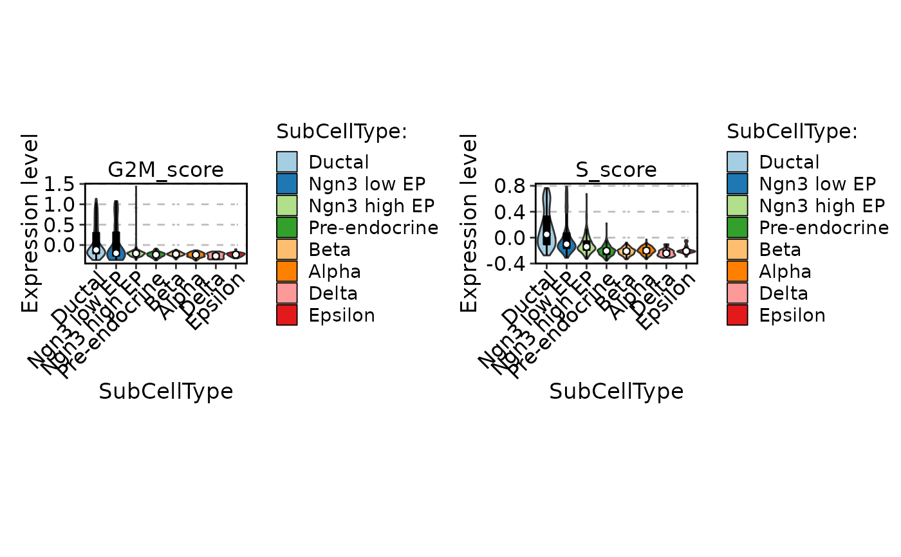
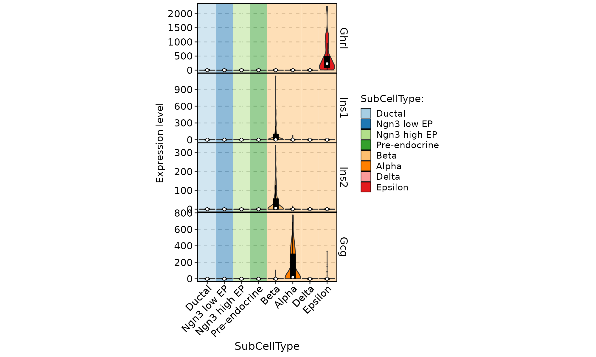
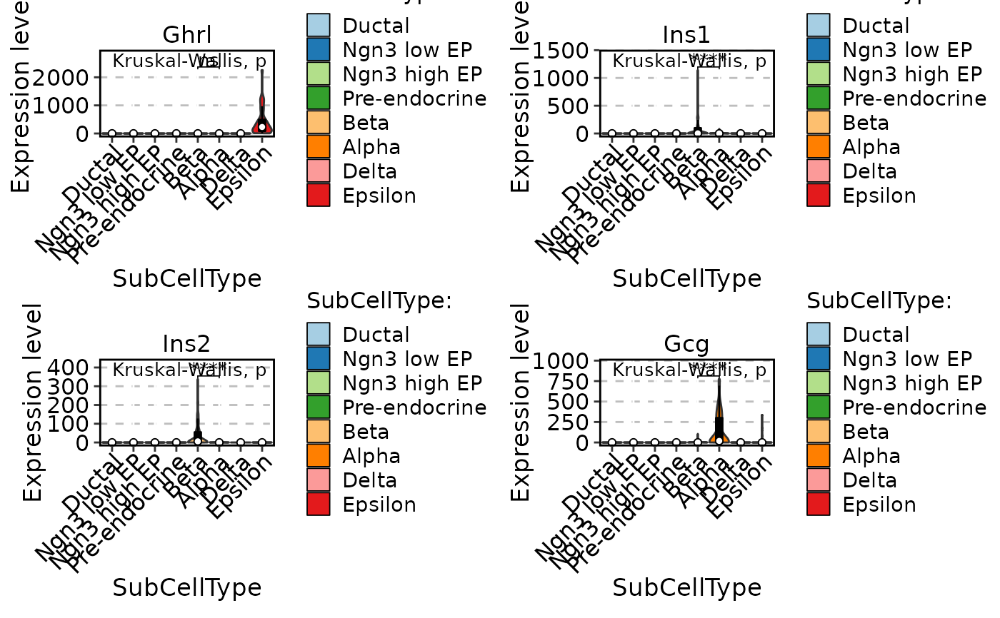

ExpVlnPlot.RdViolin plot for cell expression.
ExpVlnPlot(
srt,
features = NULL,
group.by = NULL,
split.by = NULL,
bg.by = NULL,
cells_subset = NULL,
keep_empty = FALSE,
slot = "data",
assay = DefaultAssay(srt),
palette = "Paired",
pal_color = NULL,
alpha = 1,
bg_palette = "Paired",
bg_pal_color = NULL,
bg_apha = 0.5,
add_box = TRUE,
box_fill = "black",
box_width = 0.3,
add_point = FALSE,
pt.color = "black",
pt.size = NULL,
pt.alpha = 1,
jitter.width = 1,
cells.highlight = NULL,
cols.highlight = "red",
sizes.highlight = 1,
alpha.highlight = 1,
calculate_coexp = FALSE,
compare_features = FALSE,
y.max = NULL,
same.y.lims = FALSE,
y.trans = "identity",
sort = FALSE,
adjust = 1,
split.plot = FALSE,
stack = FALSE,
fill.by = "ident",
flip = FALSE,
comparisons = list(),
ref_group = NULL,
pairwise_method = "wilcox.test",
multiplegroup_comparisons = FALSE,
multiple_method = "kruskal.test",
theme_use = "theme_scp",
aspect.ratio = 0.5,
title = NULL,
subtitle = NULL,
xlab = group.by,
ylab = "Expression level",
legend.position = "right",
legend.direction = "vertical",
combine = TRUE,
nrow = NULL,
ncol = NULL,
byrow = TRUE,
align = "hv",
axis = "lr",
force = FALSE
)data("pancreas1k")
ExpVlnPlot(pancreas1k, features = c("G2M_score", "S_score"), group.by = "SubCellType")

ExpVlnPlot(pancreas1k, features = c("Ghrl", "Ins1", "Ins2", "Gcg"), group.by = "SubCellType", bg.by = "CellType", stack = TRUE)

ExpVlnPlot(pancreas1k, features = c("Ghrl", "Ins1", "Ins2", "Gcg"), group.by = "SubCellType", comparisons = list(c("Alpha", "Beta")), multiplegroup_comparisons = TRUE)
